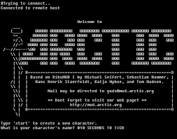
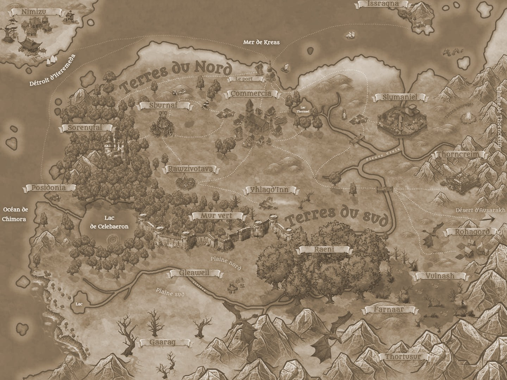

Les Jeux de role
Un jeu vidéo de rôle ou simplement jeu de rôle, couramment abrégé en RPG ,
est un genre de jeu vidéo s'inspirant des codes et du principe des jeux de rôle sur table. Le joueur y incarne un ou plusieurs
personnages qu'il fait évoluer au fil d'une quête.
Généralement, le jeu vidéo de rôle contient un univers vaste, un scénario
complexe et une durée de vie importante. Les séries les plus célèbres du genre sont Ultima, Fallout, Baldur's Gate, Final Fantasy,
Kingdom Hearts, Dragon Quest, The Elder Scrolls, Pokémon, Tales of, Persona, Dark Souls, EarthBound ou encore Xenoblade Chronicles.
Histoire
Le principe de jeu de rôle existe depuis longtemps, sous forme de jeux d'enfants. Cependant, sa forme commerciale est développée dans les années 1970 par les Américains Gary Gygax et Dave Arneson avec le jeu sur table Donjons et Dragons. La première diffusion en France, confidentielle, de la version anglaise du jeu ouvrira la porte à une traduction, brisant ainsi la barrière de la langue et amenant à une popularisation du jeu. Le succès de Donjons et Dragons et des autres jeux de rôle est important : de 1974 à 1982, plus de deux millions et demi d’exemplaires sont vendus
Sous-genre
-
Rogue-like

Rogue, l'un des précurseurs qui popularisa le genre, s'inspire du jeu de rôle sur table Donjons et Dragons, et propose une aventure solitaire. Le jeu se déroule ainsi au tour par tour, c'est-à-dire qu'à chaque tour de jeu toutes les créatures présentes ont la possibilité soit de se déplacer soit de réaliser une action. Initialement affichés sous forme de dessins générés en texte, les descendants de Rogue ont évolué, et affichent des images.
Exemple:- Dead cells
- Hades
- binding of ISSAC
-
MUD
Originellement destiné à un seul joueur, des projets ont ouvert une approche différente du jeu visant à offrir des univers disponibles en permanence à un grand nombre de joueurs simultanés. Dès 1978, les multi-user dungeon ressemblant aux jeux d'aventure textuels permettent à plusieurs utilisateurs d'interagir par le biais de commandes entrées au clavier.
Exemple:- Arctic
- Alter Epoch
- Half-Life
- Halo
-
MMORPG

En 1991 sort Neverwinter Nights, souvent considéré comme le premier jeu de rôle en ligne massivement multijoueur, MMORPG. C'est en fait le premier jeu de ce type à être entièrement graphique (les MUDs étant essentiellement textuels). Il faut attendre 1996 pour que le premier jeu de rôle massivement multijoueurs en trois dimensions soit publié avec Meridian 59.
Exemple:- Neverwinter Nights
- World of war craft
- EVE online
-
Jeu de rôle par forum
Le jeu par forum, aussi appelé jeu de rôle textuel, est une évolution des jeux par correspondance, joué uniquement par l'intermédiaire d'un navigateur web, où les joueurs narrent leurs histoires. Le JdR par forum est une déclinaison purement rédactionnelle du JdR. L'affichage vidéo à proprement parler n'intervient que très peu, il sert uniquement à une interface, lorsqu'elle existe, permettant l'interaction entre les joueurs ou entre le joueur et le monde (pour les déplacements par exemple). En effet, il s'agit surtout de faire du roleplay. À l'instar des MMORPG, les joueurs peuvent prendre des responsabilités dans un monde virtuel, qui a l'avantage de n'exister qu'à partir du moment où un joueur le fait exister. Ainsi, ce sont les joueurs qui créent le contenu du jeu par leur roleplay plus ou moins bien écrit. L'écriture est donc l'unique ciment du jeu, c'est pourquoi les participants doivent avoir pour qualité le goût des mots, mais aussi de l'imaginaire.